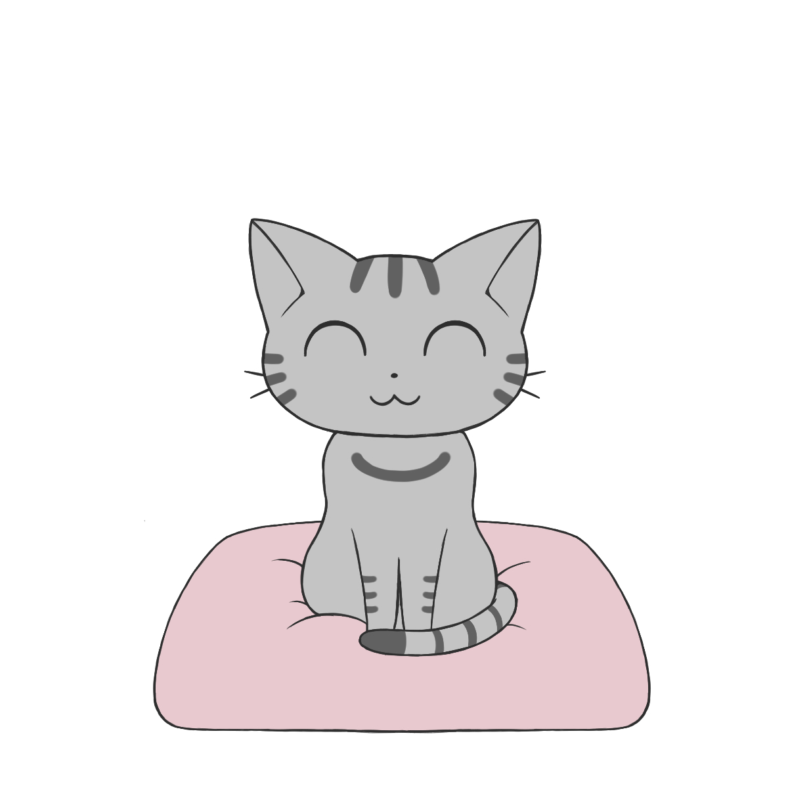
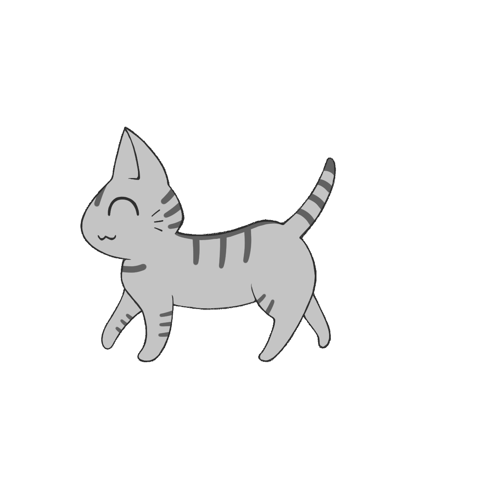
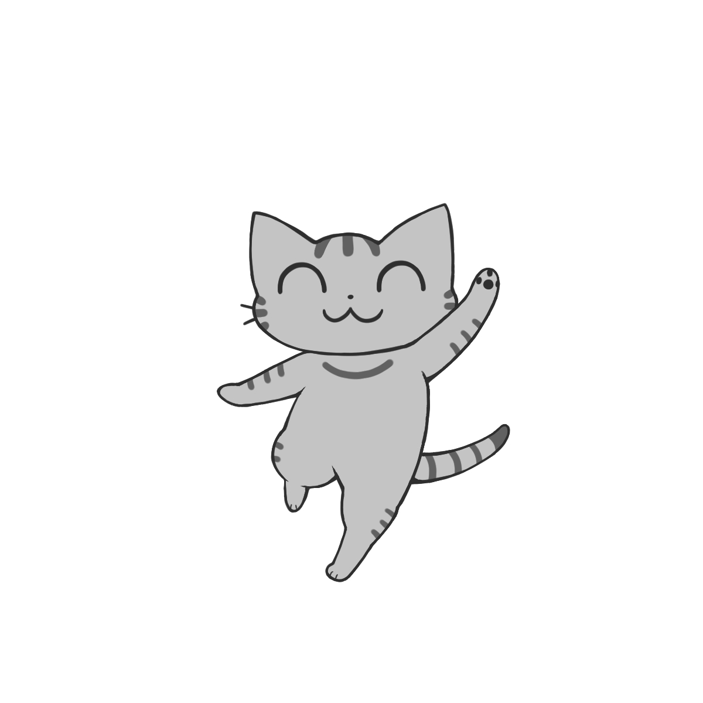
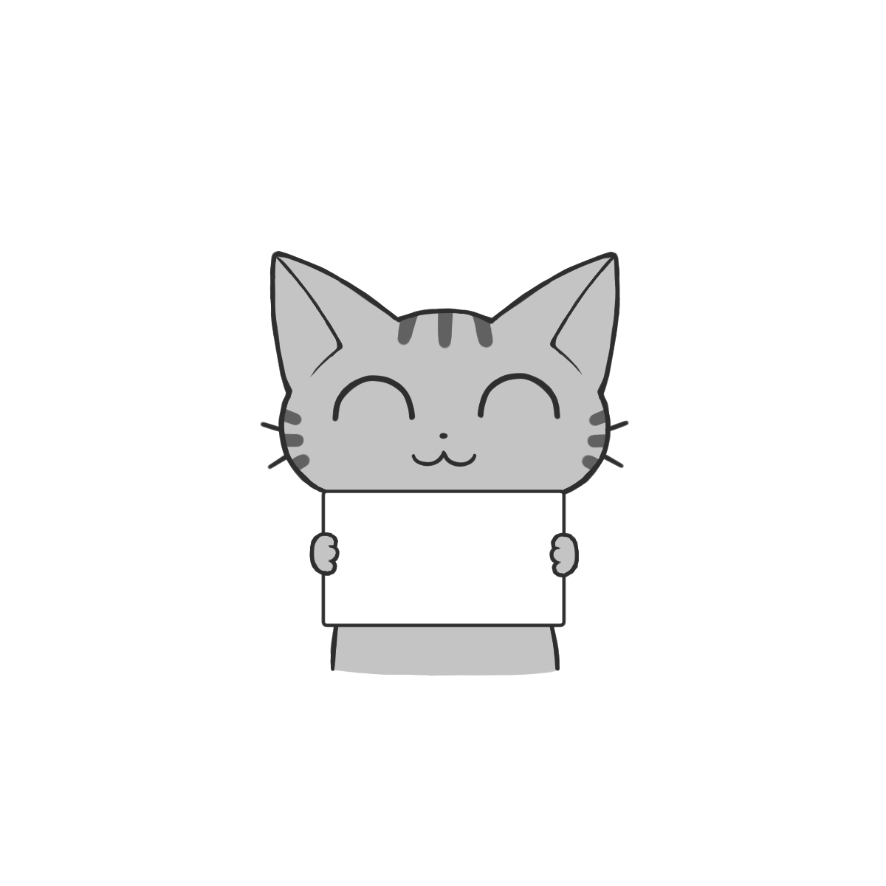

MY CAT'S LITTLE TRIP
おさんぽ〇〇 第3.2版

ねこ「今日はどこへ行こうかな」
今日のおさんぽ
🐾 一緒に歩いた距離0 m
🗺️ 猫のおでかけ0 回
ON A WALK
おさんぽ中

ねこは、てくてく歩いています……
帰宅まで
30:00
🚶 一緒に歩いた距離 0 m
🐾 帰宅時間を 0分 短縮中
位置情報を準備しています…
外出30分／100mごとに1分短縮／最短10分
WELCOME HOME

ただいま！
ねこ「今日はこんなところへ行ってきたよ！」
TODAY'S PHOTO
今日の1枚
NEW!

東京
浅草・雷門
ねこ「雷門の近くまで行ってきたよ！」
WALK DIARY
おさんぽ記録
猫との今日と、これまでの記録
今日のおさんぽ記録
🐾0 m一緒に歩いた距離
⏱️0分短縮した時間
🗺️0回猫のおでかけ
📷0枚持ち帰った写真
今日行ったところ
まだおでかけしていません
これまでの記録
🐾 累計いっしょに歩いた距離0 m
🧳 累計おでかけ回数0回
最近のおさんぽ
旅アルバム
猫が持ち帰った旅の写真
0 / 12